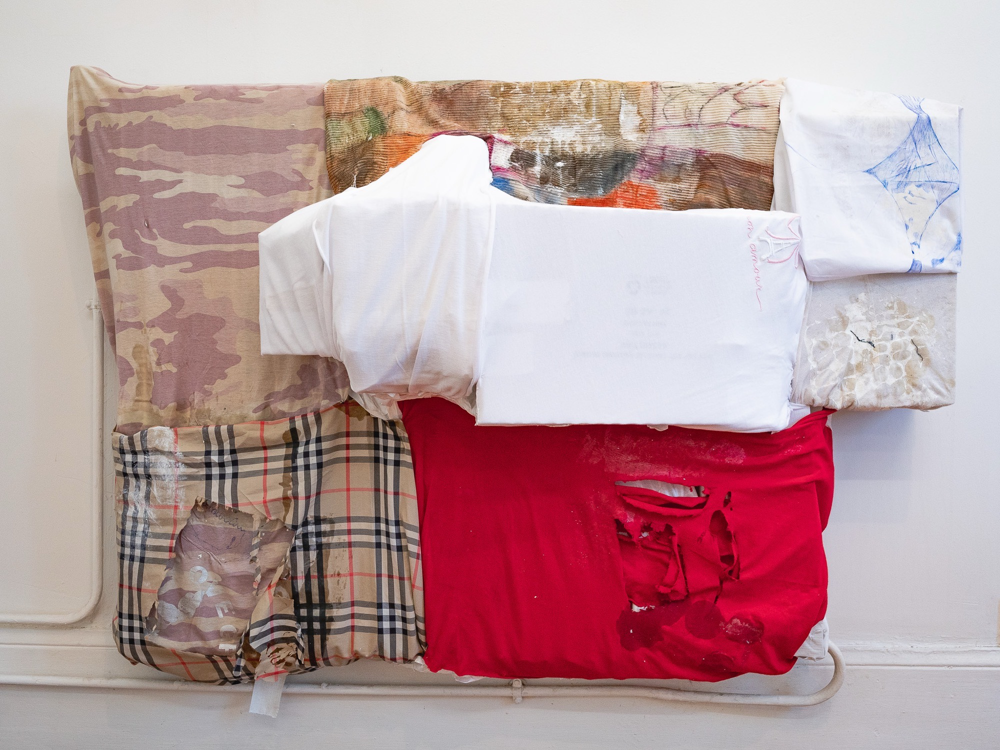
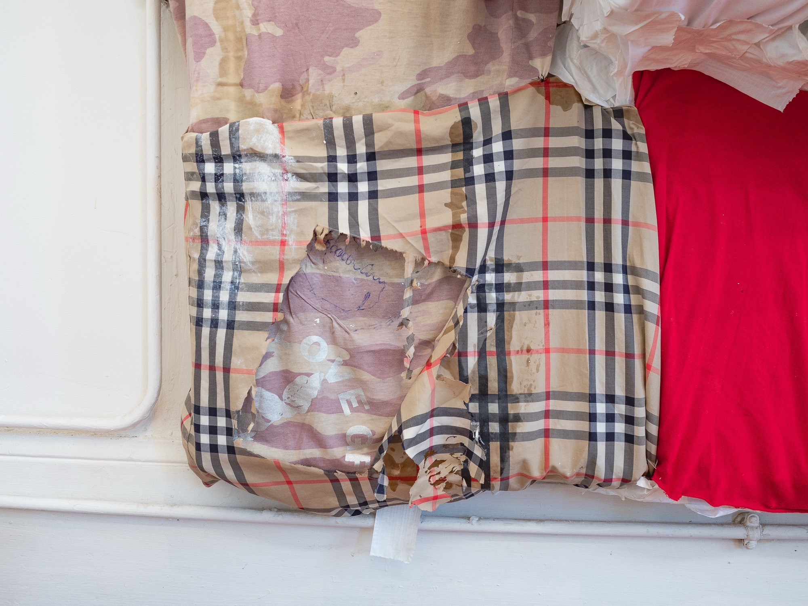
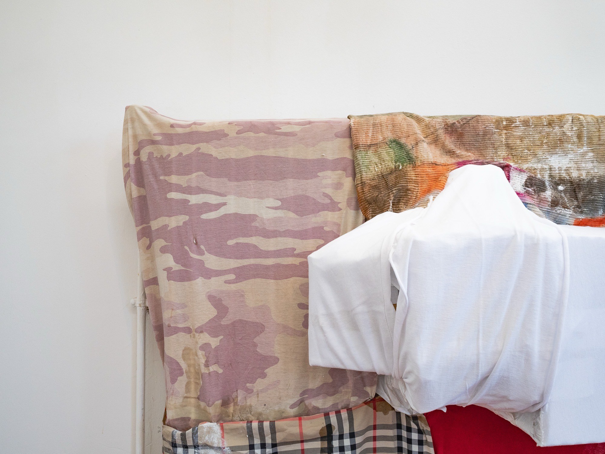
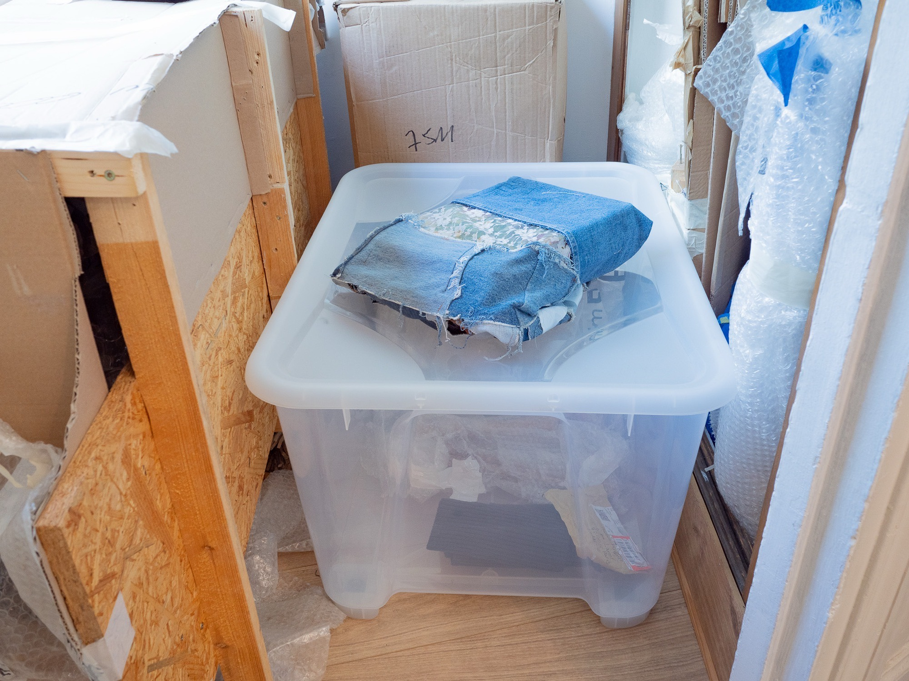
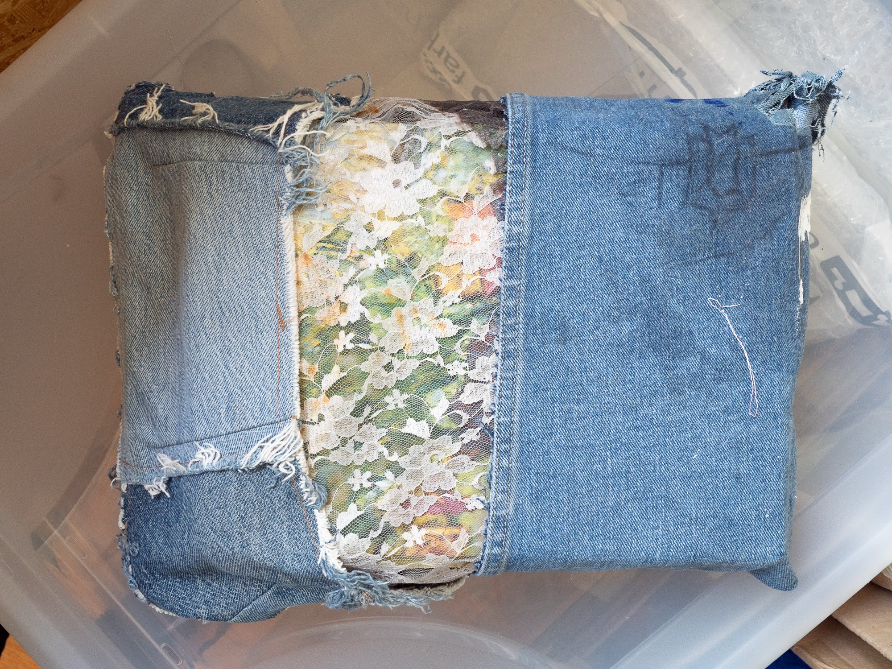
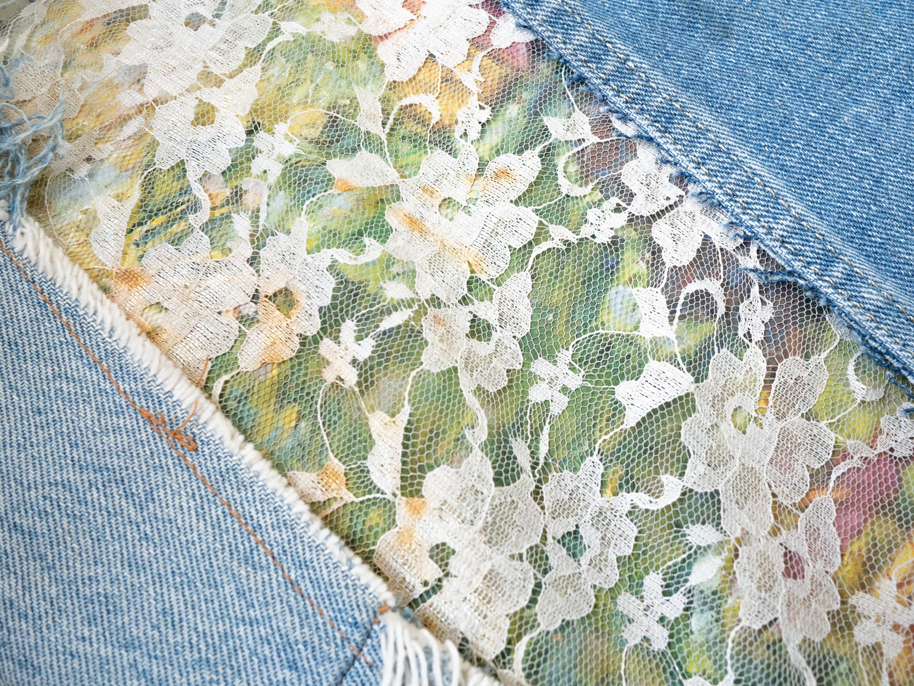

Nanna Kaiser
Entrée 007 · La Bride
Œuvres — 2 entrées

Nanna Kaiser, My heart is filled with longing, fear and north wind am I unto ripe figs, 2026. Textiles, carton, colle, livre, Dimensions variables. Courtoisie de l'artiste. Kramer.

Nanna Kaiser, My heart is filled with longing, fear and north wind am I unto ripe figs (détail), 2026. Textiles, carton, colle, livre, Dimensions variables. Courtoisie de l'artiste. Kramer.

Nanna Kaiser, My heart is filled with longing, fear and north wind am I unto ripe figs (détail), 2026. Textiles, carton, colle, livre, Dimensions variables. Courtoisie de l'artiste. Kramer.
Demander la fiche →
Nanna Kaiser, Ginger, Electrolytes, ShamWow as tissue, Crowds, Overcompensating, Perfectionism, 2026. Textiles, carton, ruban adhésif, crayon, radiateur, peinture à l’huile, Dimensions variables. Courtoisie de l'artiste. Kramer.

Nanna Kaiser, Ginger, Electrolytes, ShamWow as tissue, Crowds, Overcompensating, Perfectionism, 2026. Textiles, carton, ruban adhésif, crayon, radiateur, peinture à l’huile, Dimensions variables. Courtoisie de l'artiste. Kramer.

Nanna Kaiser, Ginger, Electrolytes, ShamWow as tissue, Crowds, Overcompensating, Perfectionism (détail), 2026. Textiles, carton, ruban adhésif, crayon, radiateur, peinture à l’huile, Dimensions variables. Courtoisie de l'artiste. Kramer.
Demander la fiche →